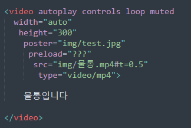

<video>
<video>태그는 html문서에 동영상을 삽입하는 태그이다 .
(html5를 지원하지 않는 웹브라우저에서는 작동x)
Ex

<video>태그에 들어가는 속성을 차례로 정리하면
- autoplay : 동영상을 자동으로 재생
- controls : 재생,정지 등 조작 메뉴를 보여줌
- loop : 동영상 반복 재생
- muted : 음소거
- width : 동영상 가로길이
- height : 동영상 세로길이
- poster : 동영상 재생 전에 보여줄 이미지
- preload : 페이지를 열 때 무엇을 로드할지 결정
auto : 동영상,메타데이터 모두 로드
metadata : 메타데이터만 로드
none : 로드 안함
- source
src : 동영상 위치를 입력. 웹브라우저가 가장 많이 지원하는 형식은 MP4
type : 동영상 타입을 알려줌. 만약 MP4파일 이라면 video/MP4(확장자) 라고 적음
- 물통입니다 : 여기는 웹브라우저가 video태그를 지원하지 않을때 출력될 텍스트